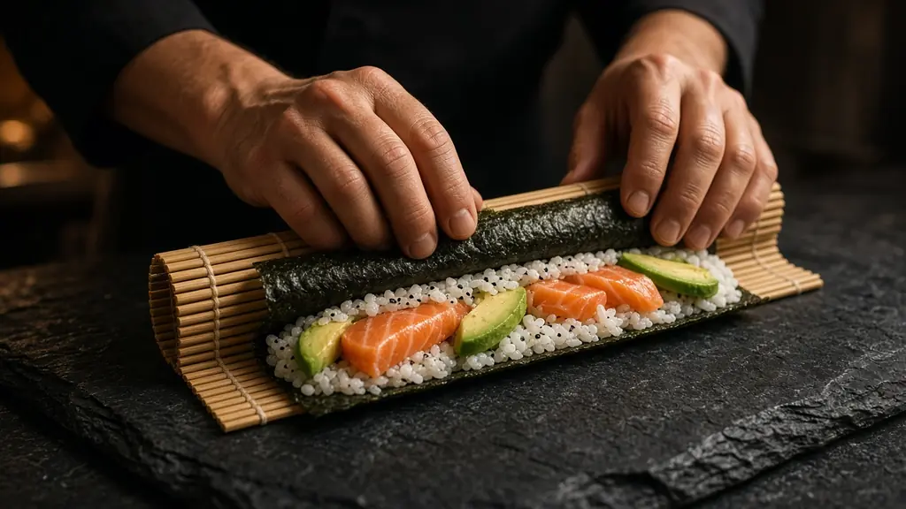
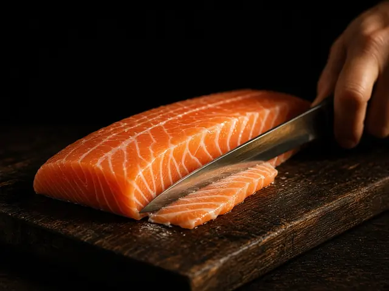
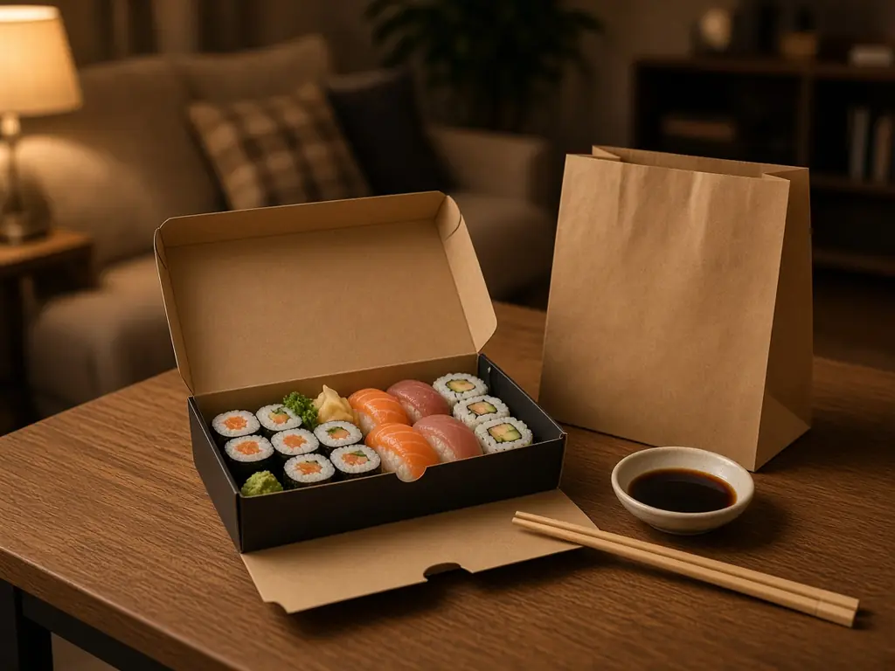
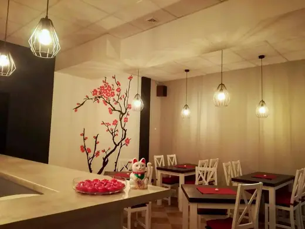

Sweet Tamago Roll gratis
Zamów zestaw Samuraj Set, a Sweet Tamago Roll dostaniesz gratis.
Zobacz zestaw →Restauracja · na wynos · dowóz po Łomży
Futomaki, california, tamago rolls i autorskie rolki Ashi Specials. Zjedz u nas na ul. Farnej 4, odbierz osobiście albo zamów z dowozem.
三 Promocje
Zamów zestaw Samuraj Set, a Sweet Tamago Roll dostaniesz gratis.
Zobacz zestaw →Zamów zestaw Party Set, a Przysmak Szefa dostaniesz gratis.
Zobacz zestaw →Zamów zestaw King Set, a Dragon Roll dostaniesz gratis.
Zobacz zestaw →Zamów cztery zestawy lunchowe, piąty dostaniesz za darmo. W każdym zestawie lunchowym sałatka.
Menu lunchowe →Szczegóły i aktualność promocji w systemie zamówień.
二 Zestawy
Szacujemy orientacyjnie 10 / 14 / 18 kawałków na osobę.

味 Ashi Sushi
Tak o swojej pracy mówi zespół Ashi Sushi: z uśmiechem, zaangażowaniem i dbałością o każdy szczegół. Rolki zwijamy na zamówienie, a nasi kierowcy dobrze znają ulice Łomży.

四 Dostawa
Wybierz dania i sprawdź promocje.
Bez rejestracji, w niecałe 30 sekund.
Gotówką, kartą lub szybkim przelewem.
Dowozimy na terenie Łomży oraz do Piątnicy Poduchownej i Piątnicy Włościańskiej. [Czas dostawy i ewentualne dopłaty za strefy – do potwierdzenia]

五 Galeria
六 Opinie
4,9średnia z 37 ocen w systemie zamówień Ashi Sushi
七 Kontakt
E-mail: [adres e-mail lokalu w Łomży – do uzupełnienia]
| Dzień | Lokal | Dowóz |
|---|

Mapa Google
Wczytamy ją po Twojej zgodzie na pliki cookies funkcjonalne.
Ashi Sushi także w Zambrowie · ul. Białostocka 28 · 500 128 597
Tak, oprócz Łomży dowozimy do Piątnicy Poduchownej i Piątnicy Włościańskiej. Sprawdź swój adres w systemie zamówień.
Dostawa kosztuje 4 zł, a minimalna wartość zamówienia z dowozem to 50 zł.
Gotówką, kartą lub szybkim przelewem.
Tak. Zapraszamy na ul. Farną 4: na miejscu, na wynos albo z dowozem.
Tak, w menu jest sekcja Lunch Menu, a w każdym zestawie lunchowym jest sałatka. Promocja 4+1 obowiązuje od poniedziałku do piątku w godzinach 12:00–16:00.